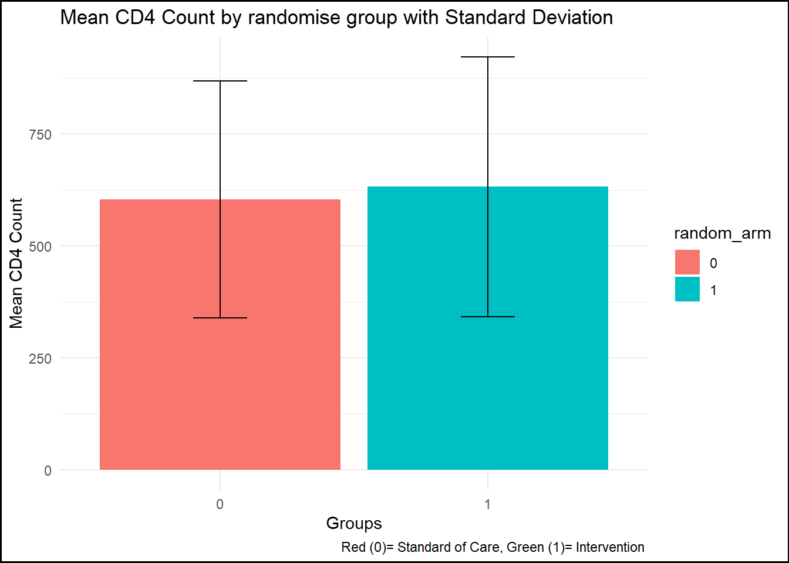
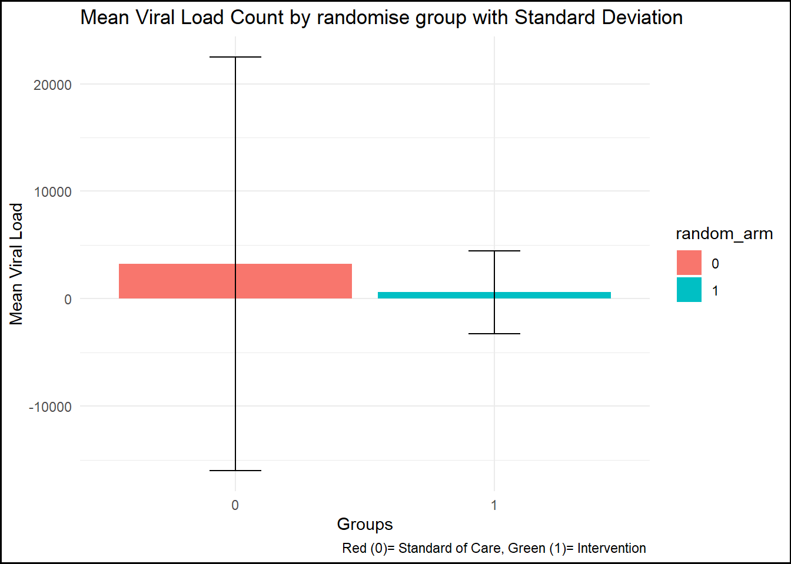
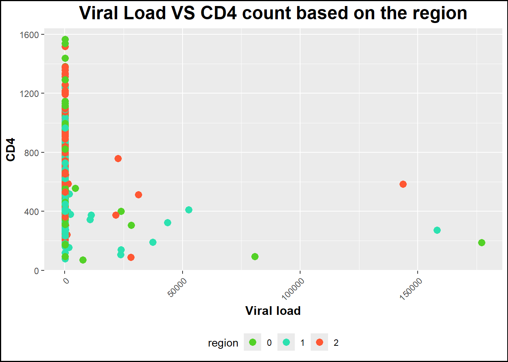
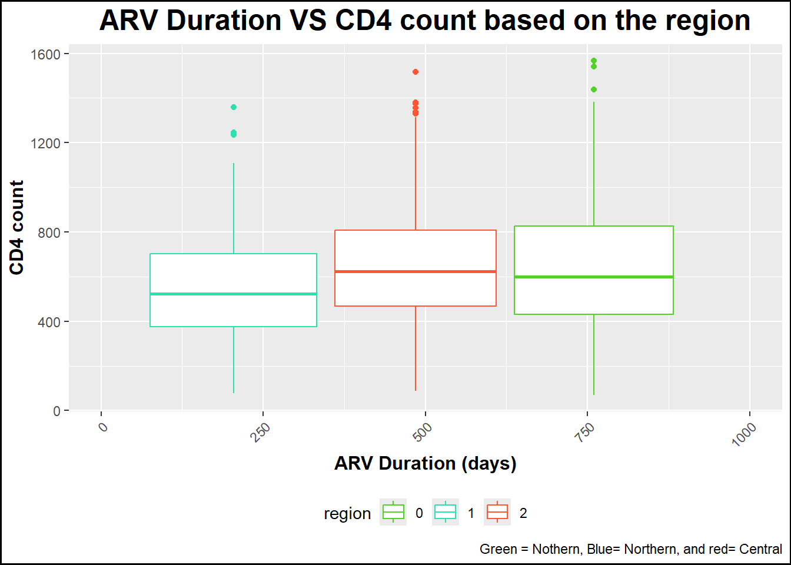

The Botswana Combination Prevention Project (BCPP) was a collaborative research effort led by the Botswana Ministry of Health (MOH), the Harvard School of Public Health/Botswana Harvard AIDS Institute Partnership (BHP), and the U.S. Centers for Disease Control and Prevention (CDC). This community-based randomized trial aimed to assess the impact of various HIV prevention strategies on reducing HIV incidence across 15 intervention and 15 control communities. The intervention communities received comprehensive HIV testing, linkage to care, and universal treatment services, guided by the UNAIDS 90-90-90 targets: ensuring 90% of individuals with HIV are aware of their status, 90% of those diagnosed are on antiretroviral therapy (ART), and 90% of those on ART achieve viral suppression.
The BCPP study was structured around two interrelated protocols: the Evaluation Protocol and the Intervention Protocol. The Evaluation Protocol assessed the primary outcome—HIV incidence—along with key secondary outcomes, focusing on data collected from the Baseline Household Survey, the HIV Incidence Cohort, and the End of Study Survey. Meanwhile, the Intervention Protocol involved the implementation of a combination prevention (CP) package in combination prevention communities (CPCs), monitoring the uptake of interventions such as expanded HIV testing and counseling, enhanced male circumcision services, and improved access to HIV care and treatment.
The dataset is available and free to download at CDC Website:https://data.cdc.gov/Global-Health/Botswana-Combination-Prevention-Project-BCPP-Publi/qcw5-4m9q/about_data.
The study is a cohort study with 3 phases. In this exercise, I only work on year 3 dataset. There are many information covered in this dataset, including demographic information of the respondent, soccioeconomic factors, HIV exposure, HIV status and conditions.
Install all packages needed
Install and library all packages needed in this section.
install.packages("tidyverse")
The following package(s) will be installed:
- tidyverse [2.0.0]
These packages will be installed into "C:/Users/mn27712/OneDrive - University of Georgia/DATA BACKUP/MACBOOK AND IPHONE_/Desktop/MADA2025/muhammadnasir-mada2025/renv/library/windows/R-4.4/x86_64-w64-mingw32".
# Installing packages --------------------------------------------------------
- Installing tidyverse ... OK [linked from cache]
Successfully installed 1 package in 18 milliseconds.
library(tidyverse)
── Attaching core tidyverse packages ──────────────────────── tidyverse 2.0.0 ──
✔ dplyr 1.1.4 ✔ readr 2.1.5
✔ forcats 1.0.0 ✔ stringr 1.5.1
✔ ggplot2 3.5.1 ✔ tibble 3.2.1
✔ lubridate 1.9.4 ✔ tidyr 1.3.1
✔ purrr 1.0.4
── Conflicts ────────────────────────────────────────── tidyverse_conflicts() ──
✖ dplyr::filter() masks stats::filter()
✖ dplyr::lag() masks stats::lag()
ℹ Use the conflicted package (<http://conflicted.r-lib.org/>) to force all conflicts to become errors
install.packages("ggplot2")
The following package(s) will be installed:
- ggplot2 [3.5.1]
These packages will be installed into "C:/Users/mn27712/OneDrive - University of Georgia/DATA BACKUP/MACBOOK AND IPHONE_/Desktop/MADA2025/muhammadnasir-mada2025/renv/library/windows/R-4.4/x86_64-w64-mingw32".
# Installing packages --------------------------------------------------------
- Installing ggplot2 ... OK [linked from cache]
Successfully installed 1 package in 17 milliseconds.
library(ggplot2)library(here)
here() starts at C:/Users/mn27712/OneDrive - University of Georgia/DATA BACKUP/MACBOOK AND IPHONE_/Desktop/MADA2025/muhammadnasir-mada2025
install.packages("patchwork") # This package is to redefine "/" operator for plot arrangement
The following package(s) will be installed:
- patchwork [1.3.0]
These packages will be installed into "C:/Users/mn27712/OneDrive - University of Georgia/DATA BACKUP/MACBOOK AND IPHONE_/Desktop/MADA2025/muhammadnasir-mada2025/renv/library/windows/R-4.4/x86_64-w64-mingw32".
# Installing packages --------------------------------------------------------
- Installing patchwork ... OK [linked from cache]
Successfully installed 1 package in 19 milliseconds.
library(patchwork)install.packages("writexl")
The following package(s) will be installed:
- writexl [1.5.1]
These packages will be installed into "C:/Users/mn27712/OneDrive - University of Georgia/DATA BACKUP/MACBOOK AND IPHONE_/Desktop/MADA2025/muhammadnasir-mada2025/renv/library/windows/R-4.4/x86_64-w64-mingw32".
# Installing packages --------------------------------------------------------
- Installing writexl ... OK [linked from cache]
Successfully installed 1 package in 17 milliseconds.
The following package(s) will be installed:
- janitor [2.2.1]
These packages will be installed into "C:/Users/mn27712/OneDrive - University of Georgia/DATA BACKUP/MACBOOK AND IPHONE_/Desktop/MADA2025/muhammadnasir-mada2025/renv/library/windows/R-4.4/x86_64-w64-mingw32".
# Installing packages --------------------------------------------------------
- Installing janitor ... OK [linked from cache]
Successfully installed 1 package in 17 milliseconds.
library(janitor)
Attaching package: 'janitor'
The following objects are masked from 'package:stats':
chisq.test, fisher.test
Loading the dataset
## set path dictionary bostwana <- here::here("test","data", "cdcbostwana.csv") # set the pathway to create relative path bostwana <-read_csv(bostwana) # read the dataset stored in specified path
Warning: One or more parsing issues, call `problems()` on your data frame for details,
e.g.:
dat <- vroom(...)
problems(dat)
Rows: 11369 Columns: 322
── Column specification ────────────────────────────────────────────────────────
Delimiter: ","
chr (217): de_subj_idC, de_hh_idC, de_plot_idC, region, random_arm, survey, ...
dbl (64): community_rndmN, pair_rndmN, interview_days, yeardone, age_at_int...
lgl (41): religion_name, religious_affil, relig_theogrp, ethnicity, prev_hi...
ℹ Use `spec()` to retrieve the full column specification for this data.
ℹ Specify the column types or set `show_col_types = FALSE` to quiet this message.
# A tibble: 6 × 13
region random_arm gender age_at_interview age5cat employment_status
<chr> <chr> <chr> <dbl> <chr> <chr>
1 Northern Intervention M 45.7 45-54 yea… Unemployed not l…
2 Southern Intervention F 51.8 45-54 yea… Unemployed looki…
3 Central Standard of Care F 40.9 35-44 yea… Unemployed looki…
4 Central Standard of Care F 18.7 16-24 yea… Unemployed not l…
5 Southern Intervention F 35.8 35-44 yea… Employed
6 Southern Standard of Care F 56.9 55-64 yea… Unemployed looki…
# ℹ 7 more variables: circumcised <chr>, hiv_status_current <chr>,
# hiv_status_time <chr>, viral_load_yr3 <dbl>, cd4_survey_yr3 <dbl>,
# cd4_surveydays_yr3 <dbl>, arv_duration_days <dbl>
summary(bost_df)
region random_arm gender age_at_interview
Length:11369 Length:11369 Length:11369 Min. :17.20
Class :character Class :character Class :character 1st Qu.:26.70
Mode :character Mode :character Mode :character Median :35.70
Mean :38.03
3rd Qu.:48.20
Max. :67.90
age5cat employment_status circumcised hiv_status_current
Length:11369 Length:11369 Length:11369 Length:11369
Class :character Class :character Class :character Class :character
Mode :character Mode :character Mode :character Mode :character
hiv_status_time viral_load_yr3 cd4_survey_yr3 cd4_surveydays_yr3
Length:11369 Min. : 40 Min. : 20.0 Min. : 358
Class :character 1st Qu.: 40 1st Qu.: 401.0 1st Qu.: 875
Mode :character Median : 40 Median : 573.0 Median : 895
Mean : 4305 Mean : 602.1 Mean : 881
3rd Qu.: 40 3rd Qu.: 757.0 3rd Qu.: 911
Max. :2243242 Max. :1567.0 Max. :1184
NA's :8130 NA's :10594 NA's :8032
arv_duration_days
Min. : 0
1st Qu.: 908
Median :2393
Mean :2432
3rd Qu.:3764
Max. :5879
NA's :8222
Note: To make easy for further analysis, I selected several variables:
region = region of sbject
random_arm = randomized arm
age= age
age5cat = age category
employment_status = employment status
hiv_status_current = Current HIV status
viral_load_yr3 = viral load in year 3 of the study
cd4_survey_yr3 = CD4 count in year 3
cd4_surveydays_yr3 = numbers of days enrolled to survey year 3.
arv_duration_days = number of day (duration) taking ARV
In this excercise, I would like to see the relationship between viral load, lenght of enrollment, ARV duration, and CD4 count. Therefore, I will drop all missing data in those variables.
data <- bost_df %>%drop_na(viral_load_yr3, cd4_survey_yr3, cd4_surveydays_yr3, arv_duration_days) %>%# I drop all observation wit N/A datafilter(viral_load_yr3 !=0, cd4_survey_yr3 !=0, cd4_surveydays_yr3 !=0, arv_duration_days !=0) # I found some observation contain 0 I drop those observation
sapply(data, class) # I want to check class of all variables
For N/A information in categorical data, I lable those missing value wih 999. However, the values are in characters. I want to change the values into factors to make us easy in analysis.
data <- data %>%mutate(region =recode(region, "Northern"=0,"Southern"=1, "Central"=2), random_arm =recode(random_arm, "Standard of Care"=0,"Intervention"=1), gender =recode(gender,"M"=0,"F"=1), age5cat =recode (age5cat, "16-24 years"=0, "25-34 years"=1, "35-44 years"=2, "45-54 years"=3, "55-64 years"=4), employment_status =recode(employment_status , "Employed"=0, "Unemployed looking for work"=1, "Unemployed not looking for work"=2), circumcised=recode(circumcised , "No"=0, "Yes"=1), hiv_status_current =recode(hiv_status_current, "HIV-uninfected"=0, "HIV-infected"=1, "Refused HIV testing"=2), hiv_status_time =recode(hiv_status_time, "HIV-negative"=0, "HIV-positive: previously diagnosed"=1, "Refused HIV testing"=2, "HIV-positive: newly discovered"=3)) # this part is to recode from character to numeric to allow us convert ito factors. sapply(data, class) # check character of the variables
Now, I want to convert categorical variables into factors
data <- data %>%mutate(across (c("region", "random_arm", "gender", "age5cat", "employment_status", "circumcised", "hiv_status_current", "hiv_status_time"), as.factor)) # this is to convert multiple variables into factors. as.factor() only can work in single variable. sapply(data, class) # check character of the variables
I want to replace all N/A with 999 in categorical variables.
data <- data %>%mutate(across(where(is.factor), ~replace_na(as.character(.), "999"))) %>%# replace the valuesmutate(across(where(is.character), as.factor)) # convert the variable back to factor. dim(data)
[1] 539 13
The data is clean now and ready for data exploration and analysis. There are 539 obserations and 13 variables in the final data.
Now I want to make summary statistics for Viral load and visualize it ina plot.
summary_by_arm <- data %>%group_by(random_arm) %>%summarise(mean_cd4 =mean(cd4_survey_yr3, na.rm =TRUE),sd_cd4 =sd(cd4_survey_yr3, na.rm =TRUE) ) # create by randomise_arm plot1 <-ggplot(summary_by_arm, aes(x = random_arm, y = mean_cd4, fill = random_arm)) +geom_bar(stat ="identity") +geom_errorbar(aes(ymin = mean_cd4 - sd_cd4, ymax = mean_cd4 + sd_cd4), width =0.2) +labs(title ="Mean CD4 Count by randomise group with Standard Deviation",x ="Groups", y ="Mean CD4 Count", caption ="Red (0)= Standard of Care, Green (1)= Intervention ") +theme_minimal() +theme(plot.background =element_rect(color ="black", size =1))
Warning: The `size` argument of `element_rect()` is deprecated as of ggplot2 3.4.0.
ℹ Please use the `linewidth` argument instead.
print(plot1)

figure_file =here("test", "pictures", "CD4 Mean and SD .png") # to set up location for the pictures created ggsave(filename = figure_file, plot=plot1) # save the pictures created
Saving 7 x 5 in image
Now I want to make summary statistics for viral load and visualize it in a plot.
summary_by_arm_vl <- data %>%group_by(random_arm) %>%summarise(mean_vl =mean(viral_load_yr3, na.rm =TRUE),sd_vl =sd(viral_load_yr3, na.rm =TRUE) ) # create by randomise_arm plot2 <-ggplot(summary_by_arm_vl, aes(x = random_arm, y = mean_vl, fill = random_arm)) +geom_bar(stat ="identity") +geom_errorbar(aes(ymin = mean_vl - sd_vl, ymax = mean_vl + sd_vl), width =0.2) +labs(title ="Mean Viral Load Count by randomise group with Standard Deviation",x ="Groups", y ="Mean Viral Load", caption ="Red (0)= Standard of Care, Green (1)= Intervention ") +theme_minimal() +theme(plot.background =element_rect(color ="black", size =1)) print(plot2)

figure_file =here("test", "pictures", "Viral Load Mean and SD .png") # to set up location for the pictures created ggsave(filename = figure_file, plot=plot2) # save the pictures created
Saving 7 x 5 in image
Data Exploration
In this part, I want to explore the data and vizualise it before data analysis.
plot3 <-ggplot(data, aes(x = viral_load_yr3, y = cd4_survey_yr3, color = region)) +geom_point(size =3) +# Specify geom as geom_point to make a scatterplotlabs(title ="Viral Load VS CD4 count based on the region", x ="Viral load", y ="CD4") +# Rename title and axestheme(axis.text.x =element_text(angle =45, hjust =1), # Rotate state names legend.position ="bottom", # Position legend at the bottomplot.title =element_text(size =18, face ="bold", hjust =0.5), axis.title.x =element_text(size =12, face ="bold"), axis.title.y =element_text(size =12, face ="bold")) +# Increase size and boldness of title and axesscale_color_manual(values =c("0"="#53d127", "1"="#2ce1b0", "2"="#ff5733"))+# crete color manually theme(plot.background =element_rect(color ="black", size =1))print(plot3)

figure_file =here("test", "pictures", "Viral Load VS CD4 based on region .png") # to set up location for the pictures created ggsave(filename = figure_file, plot=plot3) # save the pictures created
Saving 7 x 5 in image
plot4 <-ggplot(data, aes(x = arv_duration_days , y = cd4_survey_yr3, color = region)) +geom_boxplot() +# Specify geom as geom_point to make a scatterplotlabs(title ="ARV Duration VS CD4 count based on the region", x ="ARV Duration (days)", y ="CD4 count",caption ="Green = Nothern, Blue= Northern, and red= Central") +# Rename title and axestheme(axis.text.x =element_text(angle =45, hjust =1), # Rotate state names legend.position ="bottom", # Position legend at the bottomplot.title =element_text(size =18, face ="bold", hjust =0.5), axis.title.x =element_text(size =12, face ="bold"), axis.title.y =element_text(size =12, face ="bold")) +# Increase size and boldness of title and axestheme(plot.background =element_rect(color ="black", size =1)) +scale_x_continuous(limits =c(0, 1000)) +# Set x-axis maximum limit to 1000scale_color_manual(values =c("0"="#53d127", "1"="#2ce1b0", "2"="#ff5733")) # crete color manually print(plot4)
Warning: Removed 2 rows containing missing values or values outside the scale range
(`stat_boxplot()`).

figure_file =here("test", "pictures", "ARV Duration VS CD4 count based on the region .png") # to set up location for the pictures created ggsave(filename = figure_file, plot=plot4) # save the pictures created
Saving 7 x 5 in image
Warning: Removed 2 rows containing missing values or values outside the scale range
(`stat_boxplot()`).